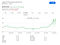
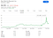
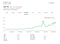
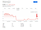
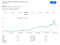
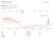

These stocks GameStoped also

As an effect of the Gamestop Squeeze, many professional investors started fearing their open short positions and started to cover them leading to a small but visible price increase. These stocks are those that are most shorted. You can see the patterns of the impact on all these stocks. here it is






It helps to learn how to see and detect patterns if you want to be a good investor.